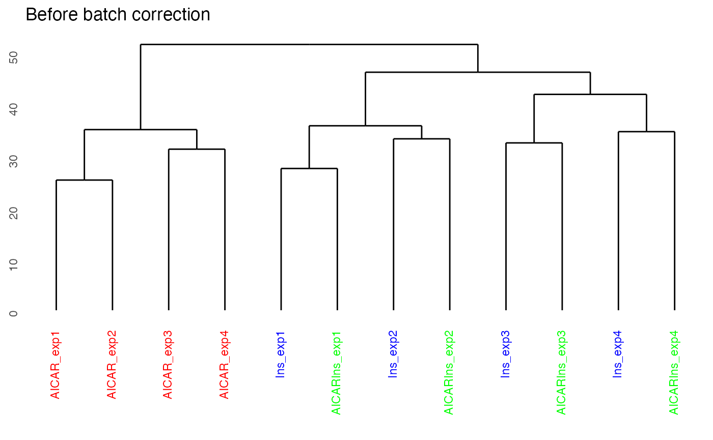
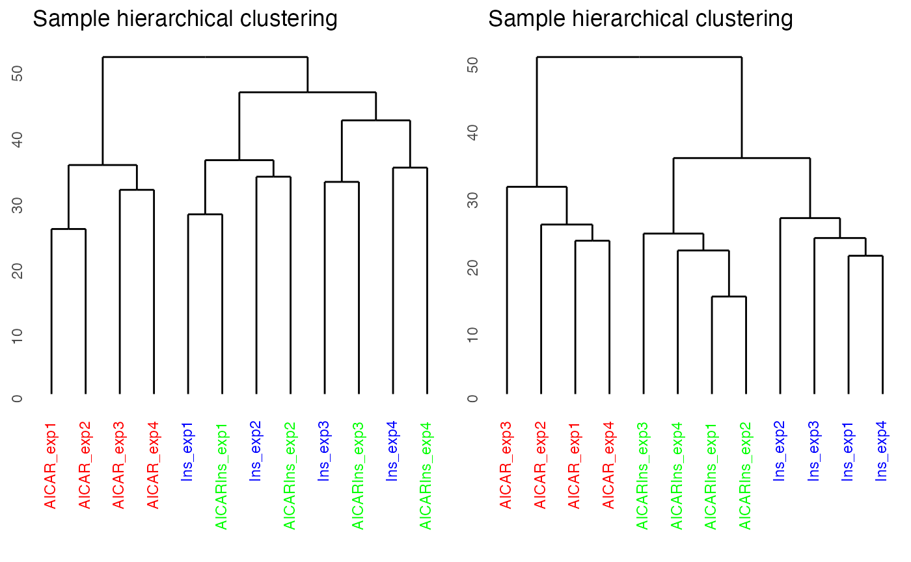
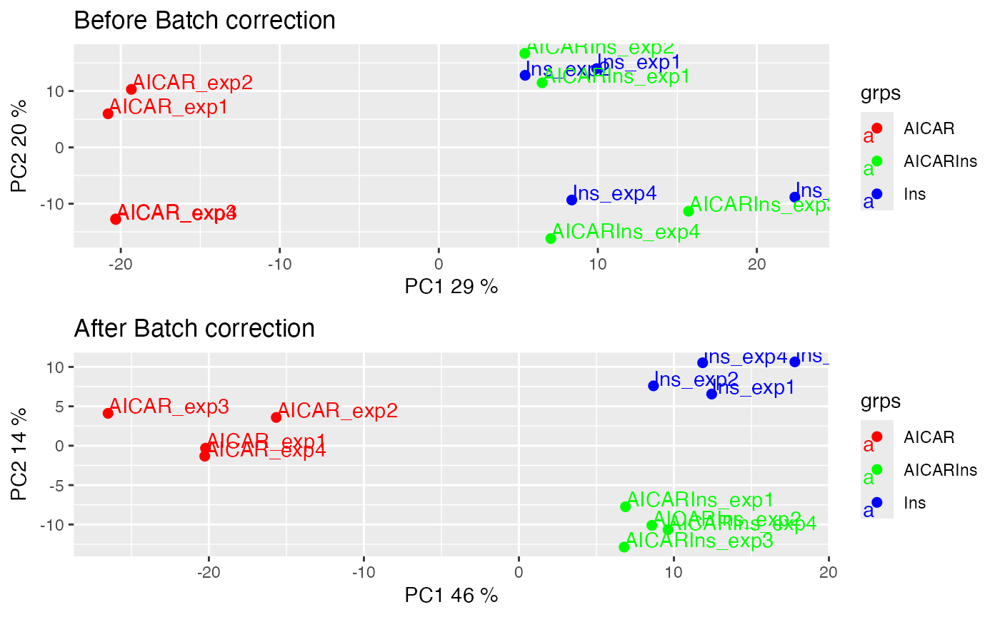

batch_correction.RmdA common but largely unaddressed challenge in phosphoproteomic data analysis is to correct for batch effect. Without correcting for batch effect, it is often not possible to analyze datasets in an integrative manner. To perform data integration and batch effect correction, we identified a set of stably phosphorylated sites (SPSs) across a panel of phosphoproteomic datasets and, using these SPSs, implemented a wrapper function of RUV-III from the ruv package called RUVphospho.
Note that when the input data contains missing values, imputation should be performed before batch correction since RUV-III requires a complete data matrix. The imputed values are removed by default after normalisation but can be retained for downstream analysis if the users wish to use the imputed matrix. This vignette will provide an example of how PhosR can be used for batch correction.
If you haven’t already done so, load the PhosR package.
suppressPackageStartupMessages({
library(PhosR)
library(stringr)
})In this example, we will use L6 myotube phosphoproteome dataset (with accession number PXD019127) and the SPSs we identified from a panel of phosphoproteomic datasets (please refer to our preprint for the full list of the datasets used). The SPSs will be used as our negative control in RUV normalisation.
data("phospho_L6_ratio_pe")
data("SPSs")
ppe <- phospho.L6.ratio.pe
ppe
#> class: PhosphoExperiment
#> dim: 6654 12
#> metadata(0):
#> assays(1): Quantification
#> rownames(6654): D3ZNS8;AAAS;S495;THIPLYFVNAQFPRFSPVLGRAQEPPAGGGG
#> Q9R0Z7;AAGAB;S210;RSVGSAESCQCEQEPSPTAERTESLPGHRSG ...
#> D3ZG78;ZZEF1;S1516;SGPSAAEVSTAEEPSSPSTPTRRPPFTRGRL
#> D3ZG78;ZZEF1;S1535;PTRRPPFTRGRLRLLSFRSMEETRPVPTVKE
#> rowData names(0):
#> colnames(12): AICAR_exp1 AICAR_exp2 ... AICARIns_exp3 AICARIns_exp4
#> colData names(0):The L6 myotube data contains phosphoproteomic samples from three treatment conditions each with quadruplicates. Myotube cells were treated with either AICAR or Insulin (Ins), which are both important modulators of the insulin signalling pathway, or both (AICARIns) before phosphoproteomic analysis.
colnames(ppe)[grepl("AICAR_", colnames(ppe))]
#> [1] "AICAR_exp1" "AICAR_exp2" "AICAR_exp3" "AICAR_exp4"
colnames(ppe)[grepl("^Ins_", colnames(ppe))]
#> [1] "Ins_exp1" "Ins_exp2" "Ins_exp3" "Ins_exp4"
colnames(ppe)[grepl("AICARIns_", colnames(ppe))]
#> [1] "AICARIns_exp1" "AICARIns_exp2" "AICARIns_exp3" "AICARIns_exp4"Note that we have in total 6654 quantified phosphosites and 12 samples in total.
dim(ppe)
#> [1] 6654 12We have already performed the relevant processing steps to generate a dense matrix. Please refer to the imputation page to perform filtering and imputation of phosphosites in order to generate a matrix without any missing values.
We will extract phosphosite labels.
sites = paste(sapply(ppe@GeneSymbol, function(x)x),";",
sapply(ppe@Residue, function(x)x),
sapply(ppe@Site, function(x)x),
";", sep = "")Lastly, we will take the grouping information from colnames of our matrix.
There are a number of ways to diagnose batch effect. In PhosR, we make use of two visualisation methods to detect batch effect: dendrogram of hierarchical clustering and a principal component analysis (PCA) plot. We use the plotQC function we introduced in the imputation section of the vignette.
By setting panel = dendrogram, we can plot the dendrogram illustrating the results of unsupervised hierarchical clustering of our 12 samples. Clustering results of the samples demonstrate that there is a strong batch effect (where batch denoted as expX, where X refers to the batch number). This is particularly evident for samples from Ins and AICARIns treated conditions.
plotQC(ppe@assays@data$Quantification, panel = "dendrogram", grps=grps, labels = colnames(ppe)) +
ggplot2::ggtitle("Before batch correction")
We can also visualise the samples in PCA space by setting panel = pca. The PCA plot demonstrates aggregation of samples by batch rather than treatment groups (each point represents a sample coloured by treatment condition). It has become clearer that even within the AICAR treated samples, there is some degree of batch effect as data points are separated between samples from batches 1 and 2 and those from batches 3 and 4.
We have now diagnosed that our dataset exhibits batch effect that is driven by experiment runs for samples treated with three different conditions. To address this batch effect, we correct for this unwanted variation in the data by utilising our pre-defined SPSs as a negative control for RUVphospho.
First, we construct a design matrix by condition.
design = model.matrix(~ grps - 1)
design
#> grpsAICAR grpsAICARIns grpsIns
#> 1 1 0 0
#> 2 1 0 0
#> 3 1 0 0
#> 4 1 0 0
#> 5 0 0 1
#> 6 0 0 1
#> 7 0 0 1
#> 8 0 0 1
#> 9 0 1 0
#> 10 0 1 0
#> 11 0 1 0
#> 12 0 1 0
#> attr(,"assign")
#> [1] 1 1 1
#> attr(,"contrasts")
#> attr(,"contrasts")$grps
#> [1] "contr.treatment"We will then use the RUVphospho function to normalise the data. Besides the quantification matrix and the design matrix, there are two other important inputs to RUVphospho: 1) the ctl argument is an integer vector denoting the position of SPSs within the quantification matrix 2) k parameter is an integer denoting the expected number of experimental (e.g., treatment) groups within the data
# phosphoproteomics data normalisation and batch correction using RUV
ctl = which(sites %in% SPSs)
ppe = RUVphospho(ppe, M = design, k = 3, ctl = ctl)As quality control, we will demonstrate and evaluate our normalisation method with hierarchical clustering and PCA plot using again plotQC. Both the hierarchical clustering and PCA results demonstrate the normalisation procedure in PhosR facilitates effective batch correction.
# plot after batch correction
p1 = plotQC(ppe@assays@data$Quantification, grps=grps, labels = colnames(ppe), panel = "dendrogram" )
p2 = plotQC(ppe@assays@data$normalised, grps=grps, labels = colnames(ppe), panel="dendrogram")
ggpubr::ggarrange(p1, p2, nrow = 1)
p1 = plotQC(ppe@assays@data$Quantification, panel = "pca", grps=grps, labels = colnames(ppe)) +
ggplot2::ggtitle("Before Batch correction")
p2 = plotQC(ppe@assays@data$normalised, grps=grps, labels = colnames(ppe), panel="pca") +
ggplot2::ggtitle("After Batch correction")
ggpubr::ggarrange(p1, p2, nrow = 2)
We note that the current SPS are derived from phosphoproteomic datasets derived from mouse cells. To enable users working on phosphoproteomic datasets derived from other species, we have developed a function getSPS that takes in multiple phosphoproteomics datasets stored as phosphoExperiment objects to generate set of SPS. Users can use their in-house or public datasets derived from the same speciies to generate species-specific SPS, which they can use to normalise their data.Below demonstrate the usage of the getSPS function.
First, load datasets to use for SPS generation.
data("phospho_L6_ratio_pe")
data("phospho.liver.Ins.TC.ratio.RUV.pe")
data("phospho.cells.Ins.pe")
ppe1 <- phospho.L6.ratio.pe
ppe2 <- phospho.liver.Ins.TC.ratio.RUV.pe
ppe3 <- phospho.cells.Ins.peFilter, impute, and transform ppe3 (other inputs have already been processed).
grp3 = gsub('_[0-9]{1}', '', colnames(ppe3))
ppe3 <- selectGrps(ppe3, grps = grp3, 0.5, n=1)
ppe3 <- tImpute(ppe3)
FL83B.ratio <- ppe3@assays@data$imputed[, 1:12] - rowMeans(ppe3@assays@data$imputed[,grep("FL83B_Control", colnames(ppe3))])
Hepa.ratio <- ppe3@assays@data$imputed[, 13:24] - rowMeans(ppe3@assays@data$imputed[,grep("Hepa1.6_Control", colnames(ppe3))])
ppe3@assays@data$Quantification <- cbind(FL83B.ratio, Hepa.ratio)Generate inputs of getSPS.
ppe.list <- list(ppe1, ppe2, ppe3)
cond.list <- list(grp1 = gsub("_.+", "", colnames(ppe1)),
grp2 = str_sub(colnames(ppe2), end=-5),
grp3 = str_sub(colnames(ppe3), end=-3))Finally run getSPS to generate list of SPSs.
inhouse_SPSs <- getSPS(ppe.list, conds = cond.list)
head(inhouse_SPSs)
#> [1] "TMPO;S67;" "RBM5;S621;" "SRRM1;S427;" "THOC2;S1417;" "SSB;S92;"
#> [6] "PPIG;S252;"Run RUVphospho using the newly generateed SPSs. (NOTE that we do not expect the results to be reproducible as the exempler SPSs have been generated from dummy datasets that have been heavily filtered.)
sessionInfo()
#> R version 4.2.0 (2022-04-22)
#> Platform: x86_64-apple-darwin17.0 (64-bit)
#> Running under: macOS Big Sur/Monterey 10.16
#>
#> Matrix products: default
#> BLAS: /Library/Frameworks/R.framework/Versions/4.2/Resources/lib/libRblas.0.dylib
#> LAPACK: /Library/Frameworks/R.framework/Versions/4.2/Resources/lib/libRlapack.dylib
#>
#> locale:
#> [1] en_US.UTF-8/en_US.UTF-8/en_US.UTF-8/C/en_US.UTF-8/en_US.UTF-8
#>
#> attached base packages:
#> [1] stats graphics grDevices utils datasets methods base
#>
#> other attached packages:
#> [1] stringr_1.4.0 PhosR_1.5.2
#>
#> loaded via a namespace (and not attached):
#> [1] ggtext_0.1.1 bitops_1.0-7
#> [3] matrixStats_0.62.0 fs_1.5.2
#> [5] RColorBrewer_1.1-3 rprojroot_2.0.3
#> [7] GenomeInfoDb_1.32.1 tools_4.2.0
#> [9] backports_1.4.1 bslib_0.3.1
#> [11] utf8_1.2.2 R6_2.5.1
#> [13] BiocGenerics_0.42.0 colorspace_2.0-3
#> [15] tidyselect_1.1.2 gridExtra_2.3
#> [17] GGally_2.1.2 preprocessCore_1.58.0
#> [19] compiler_4.2.0 textshaping_0.3.6
#> [21] cli_3.3.0 Biobase_2.56.0
#> [23] xml2_1.3.3 network_1.17.1
#> [25] desc_1.4.1 DelayedArray_0.22.0
#> [27] ggdendro_0.1.23 labeling_0.4.2
#> [29] sass_0.4.1 scales_1.2.0
#> [31] proxy_0.4-26 pkgdown_2.0.3
#> [33] systemfonts_1.0.4 digest_0.6.29
#> [35] rmarkdown_2.14 XVector_0.36.0
#> [37] pkgconfig_2.0.3 htmltools_0.5.2
#> [39] MatrixGenerics_1.8.0 highr_0.9
#> [41] ruv_0.9.7.1 limma_3.52.0
#> [43] fastmap_1.1.0 rlang_1.0.2
#> [45] GlobalOptions_0.1.2 farver_2.1.0
#> [47] shape_1.4.6 jquerylib_0.1.4
#> [49] generics_0.1.2 jsonlite_1.8.0
#> [51] statnet.common_4.6.0 dendextend_1.15.2
#> [53] dplyr_1.0.9 car_3.0-13
#> [55] RCurl_1.98-1.6 magrittr_2.0.3
#> [57] GenomeInfoDbData_1.2.8 Matrix_1.4-1
#> [59] Rcpp_1.0.8.3 munsell_0.5.0
#> [61] S4Vectors_0.34.0 fansi_1.0.3
#> [63] abind_1.4-5 viridis_0.6.2
#> [65] lifecycle_1.0.1 stringi_1.7.6
#> [67] yaml_2.3.5 carData_3.0-5
#> [69] MASS_7.3-56 SummarizedExperiment_1.26.1
#> [71] zlibbioc_1.42.0 plyr_1.8.7
#> [73] grid_4.2.0 crayon_1.5.1
#> [75] lattice_0.20-45 cowplot_1.1.1
#> [77] gridtext_0.1.4 circlize_0.4.14
#> [79] knitr_1.39 pillar_1.7.0
#> [81] igraph_1.3.1 ggpubr_0.4.0
#> [83] GenomicRanges_1.48.0 markdown_1.1
#> [85] ggsignif_0.6.3 reshape2_1.4.4
#> [87] stats4_4.2.0 glue_1.6.2
#> [89] evaluate_0.15 pcaMethods_1.88.0
#> [91] BiocManager_1.30.17 vctrs_0.4.1
#> [93] gtable_0.3.0 purrr_0.3.4
#> [95] tidyr_1.2.0 reshape_0.8.9
#> [97] cachem_1.0.6 ggplot2_3.3.6
#> [99] xfun_0.30 broom_0.8.0
#> [101] e1071_1.7-9 coda_0.19-4
#> [103] rstatix_0.7.0 ragg_1.2.2
#> [105] class_7.3-20 viridisLite_0.4.0
#> [107] tibble_3.1.7 pheatmap_1.0.12
#> [109] memoise_2.0.1 IRanges_2.30.0
#> [111] ellipsis_0.3.2 BiocStyle_2.24.0